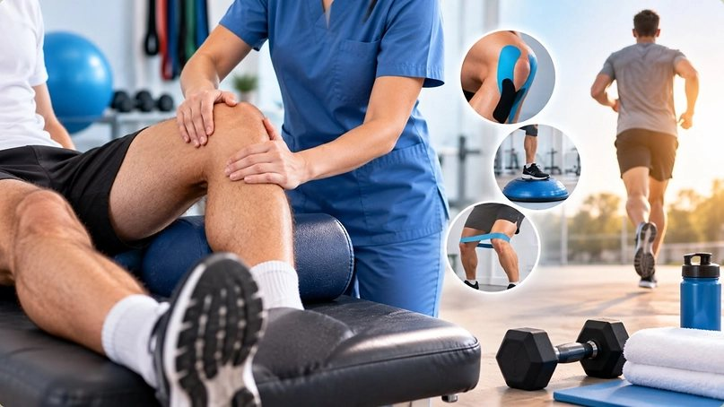
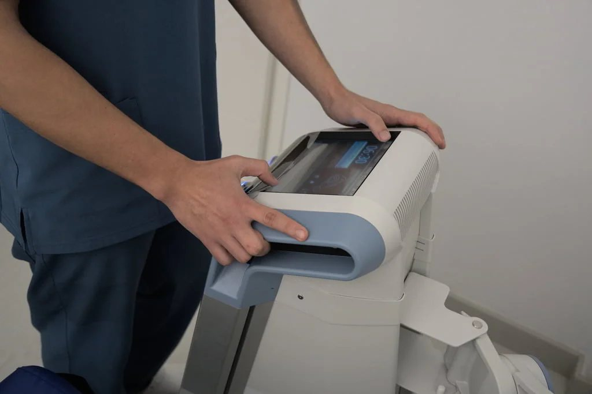
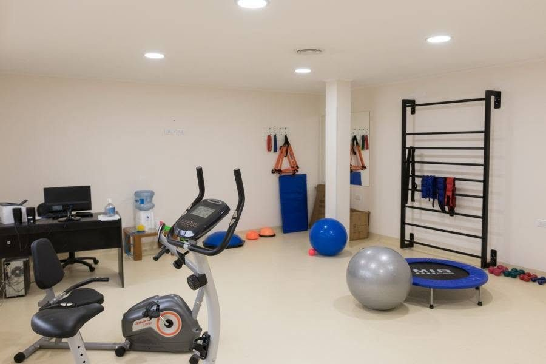
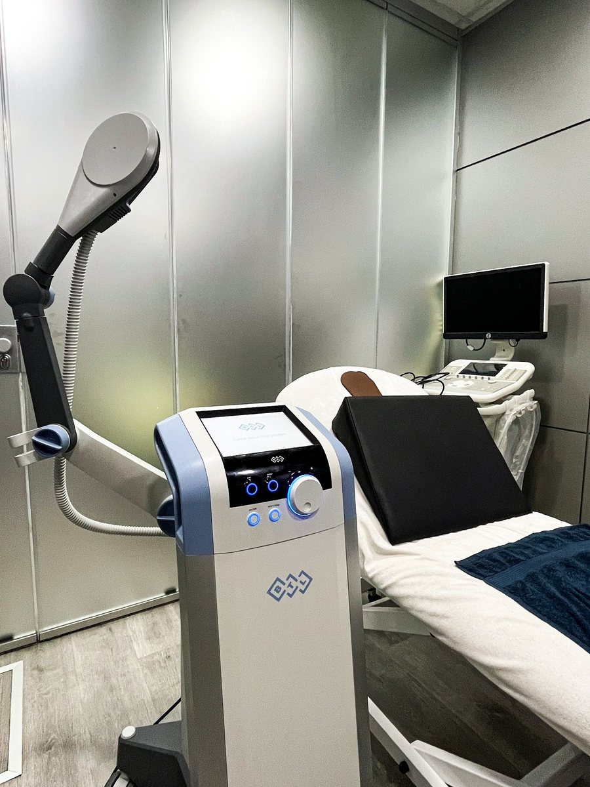
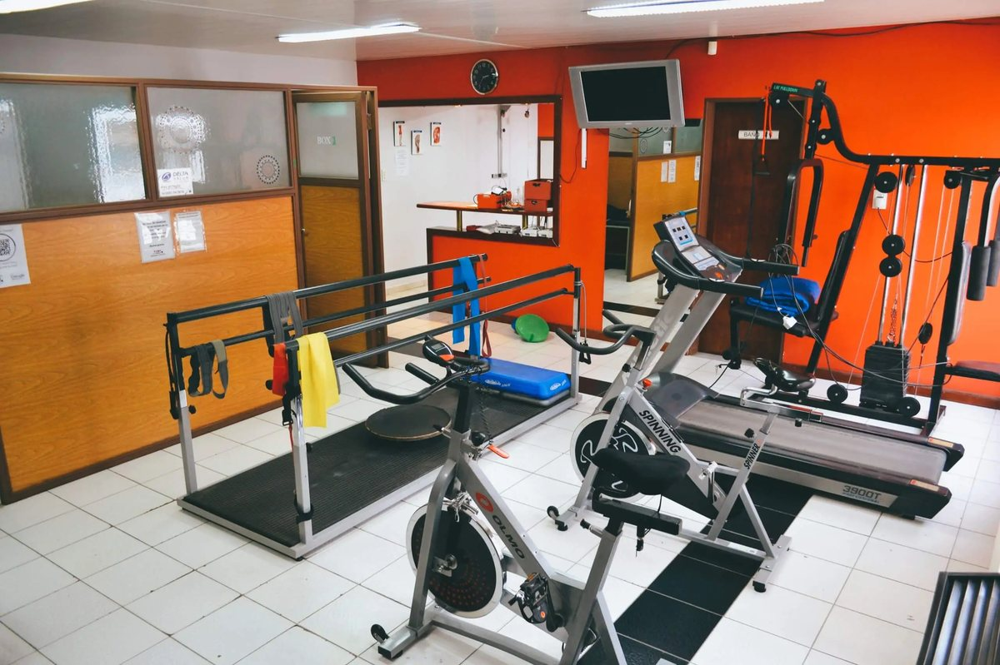
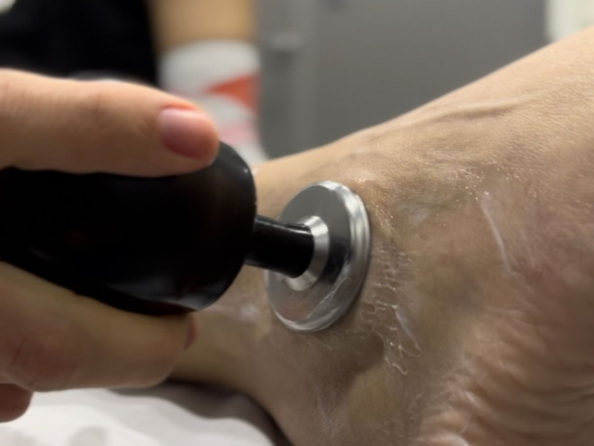
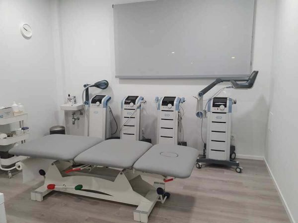

Kinesiología deportiva
Prevención y rehabilitación de lesiones sufridas en la práctica de deportes de todo nivel.
- Readaptación y vuelta al deporte
- Vendaje funcional
- Trabajo de fuerza y equilibrio
Kinesiología, rehabilitación y fisioterapia con equipamiento moderno y un equipo que te acompaña en cada sesión.
Consultar por un turno
Cada tratamiento se arma según tu caso, combinando terapia manual, tecnología y ejercicio.

Prevención y rehabilitación de lesiones sufridas en la práctica de deportes de todo nivel.

Tratamientos post-operatorios, fracturas, esguinces y dolores crónicos de columna.

Uso de agentes físicos como magnetoterapia, ultrasonido y electroestimulación.

Ejercicio terapéutico con equipamiento para recuperar fuerza, movilidad y equilibrio, siempre guiado por tu kinesiólogo.
Cada sesión es individual y sigue un recorrido claro, para que sepas siempre en qué etapa estás.
Conversamos sobre tu lesión o dolor y evaluamos tu movilidad y tu fuerza.
Definimos objetivos y armamos un tratamiento personalizado, con tiempos realistas.
Combinamos agentes físicos, terapia manual y ejercicio en el gimnasio, siempre acompañado por tu kinesiólogo.
Controlamos tu evolución, ajustamos el plan y te enseñamos ejercicios para continuar en casa.

